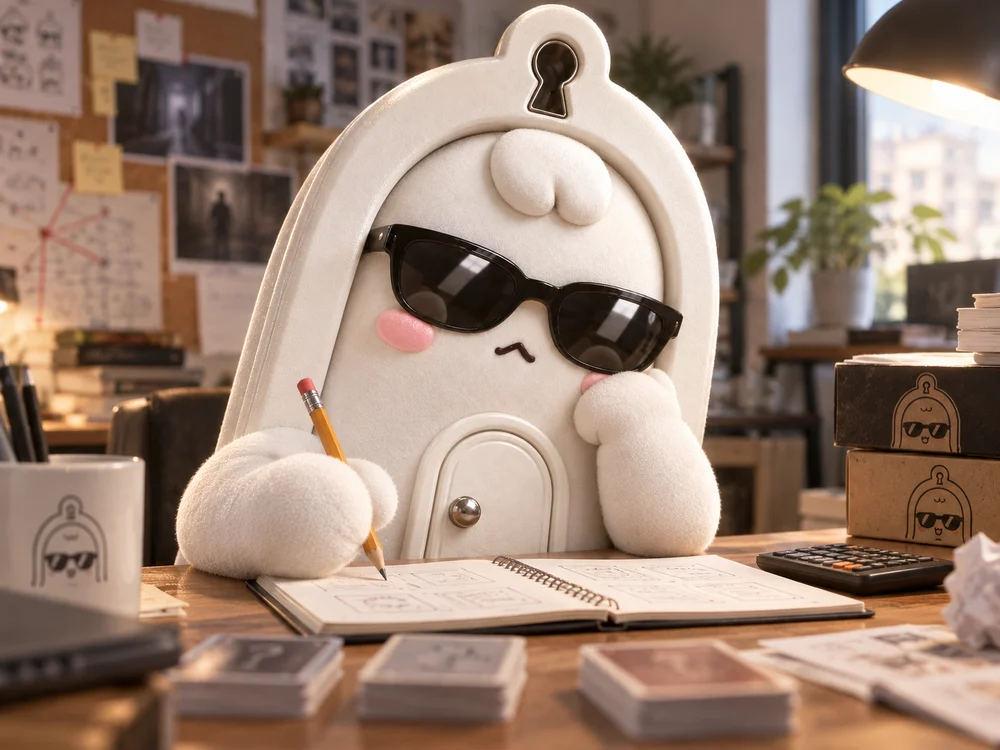
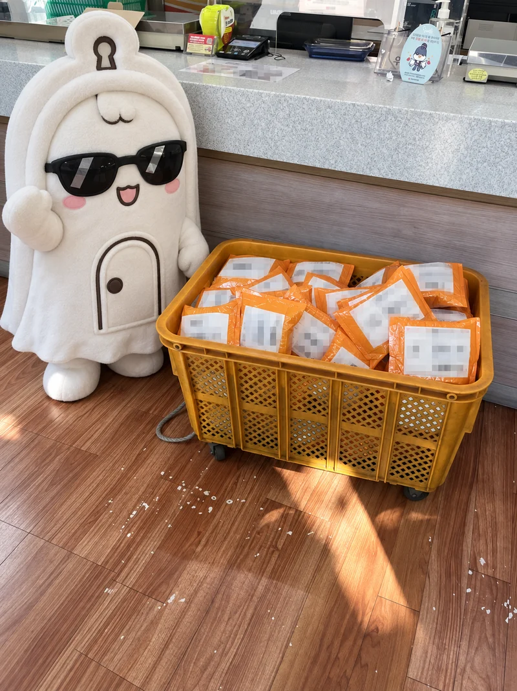

무꾸리 사건 보관소
무꾸리는 플레이어가 이야기 속 인물이 되어 단서를 살피고 대화하며 사건의 진실을 추리하는 게임을 만듭니다. 작품이나 기록물을 선택하면 소개를 읽을 수 있습니다.
MUKKURI / GAMES
함께 풀어볼 사건.
인원을 확인하고, 함께 플레이할 작품을 골라보세요.
CASE 01 / 6인용 머더미스터리
검은 복도
불이 꺼진 동안,
누군가의 이야기가 달라졌다.
《검은 복도》는 무꾸리가 제작한 6인용 머더미스터리입니다. 폭우 속 폐수련원에서 진행된 공포영화의 암전 촬영 중 살인사건이 벌어집니다.
여섯 명의 플레이어가 각자의 역할을 맡아, 남겨진 단서와 서로의 진술을 맞춰보며 사건의 진실을 추리합니다.
- 플레이 인원
- 6명
- 이야기의 무대
- 폭우 속 폐수련원
- 이용 자료
- 실물 구성품과 QR 자료
- QR 자료 준비물
- 스마트폰과 인터넷 환경
어둠 속에서 무슨 일이 있었을까요?
촬영을 위해 불을 끈 시간. 사건 이후 남겨진 사람들은 그 짧은 순간의 행적을 되짚어야 합니다. 모두가 같은 장소에 있었지만, 알고 있는 이야기는 서로 다릅니다.
플레이 시간과 구성품, 판매 조건은 구매 전 공식 판매페이지에서 확인해 주세요.
공식 구매처 안내 보기 ↗CASE 02 / 5인용 머더미스터리
똑…똑…똑…
닫힌 방에서,
세 번의 노크가 들렸다.
《똑…똑…똑…》은 다섯 명이 각자의 역할을 맡아 단서를 살피고 대화하며 사건의 진실을 추리하는 머더미스터리입니다. 별도의 진행자(GM) 없이 플레이할 수 있습니다.
- 플레이 인원
- 5명
- 예상 플레이 시간
- 약 90분
- 권장 연령
- 15세 이상
- 별도 진행자
- 필요 없음
- QR 자료 준비물
- 스마트폰과 인터넷 환경
산속 수련원에서 맞이한 하룻밤
2000년대 초, 태권도장의 고등부 수련생들이 수련회를 위해 오래된 산속 수련원을 찾습니다. 복도 끝의 닫힌 방에는 밤마다 노크 소리가 들린다는 이야기가 전해집니다.
그리고 다음 날 아침, 그 방에서 사건이 드러납니다. 다섯 명은 각자가 알고 있는 일을 바탕으로 지난밤을 되짚기 시작합니다.
공식 구매처 안내 보기 ↗READ ME FIRST
머더미스터리가 처음이라면.
당신도 이 이야기의 등장인물입니다.
머더미스터리는 플레이어가 사건에 연루된 인물을 맡아, 각자 알고 있는 정보와 조사한 단서를 바탕으로 사건의 진실을 추리하는 대화형 게임입니다.
어떻게 플레이하나요?
- 자신의 인물을 이해합니다.
캐릭터 설정서를 읽고, 사건 속에서 내가 알고 있는 일을 확인합니다.
- 단서를 살피고 대화합니다.
작품의 규칙에 따라 조사하고, 다른 사람의 이야기를 들으며 질문합니다.
- 판단을 내리고 결말을 확인합니다.
모인 정보를 연결해 자신의 추리를 정리합니다. 세부 진행 방식은 작품마다 다릅니다.
자주 묻는 질문
- 연기를 잘해야 하나요?
- 연기 경험이 필수는 아닙니다. 설정서를 이해하고, 자신이 맡은 인물의 입장에서 이야기하면 됩니다.
- 무엇을 준비해야 하나요?
- 작품에 맞는 인원과 충분한 시간, 함께 대화할 공간을 준비해 주세요. QR 자료를 사용하는 작품에는 스마트폰과 인터넷 환경도 필요합니다.
- 다시 플레이할 수 있나요?
- 범인과 주요 전개를 알게 되면 첫 플레이와 같은 추리 경험을 하기 어렵습니다. 이미 내용을 아는 사람의 참여는 작품의 규칙과 참가자들의 동의를 확인해 주세요.
- 후기에는 무엇을 적으면 안 되나요?
- 범인, 결말, 핵심 단서와 캐릭터의 비밀이 드러나지 않도록 작성해 주세요.
BEHIND THE STORY
이야기가 게임이 되기까지.
무꾸리의 작업은 이야기와 플레이 규칙, 카드와 책자 디자인, 디지털 자료로 이어집니다. 플레이어가 무엇을 읽고, 어떤 정보를 확인하며, 언제 대화를 시작할지 함께 설계합니다.


- 01 / 기획 · 집필
이야기와 규칙
인물의 시선과 사건의 흐름을 정리하고, 단서를 확인하고 대화하는 방식을 구성합니다.
- 02 / 편집 · 시각 디자인
손에 닿는 디자인
카드와 책자에 담길 정보를 정리하고, 플레이 중 필요한 내용을 찾아 읽을 수 있게 다듬습니다.
- 03 / 디지털 플레이 자료
플레이를 잇는 화면
QR로 확인하는 설명서와 캐릭터 자료를 구성하고, 모바일에서 읽는 흐름을 정리합니다.
MADE BY MUKKURI
무꾸리와 제작자 강민구.
이야기를 만들고,
플레이할 수 있게 다듬습니다.
무꾸리(MUKKURI)는 머더미스터리와 스토리 게임을 기획·제작하는 창작 브랜드입니다. 제작자 강민구는 이야기와 규칙, 시각 디자인과 디지털 자료를 연결해 플레이어가 직접 참여하는 경험을 만듭니다.
첫 문장을 읽는 순간부터 마지막 추리를 나누는 순간까지. 플레이어가 만나는 문장과 화면, 손에 쥐는 구성품을 함께 생각합니다.
대표 작품
구매 및 상품 문의
주문·배송·구성품 문의는 구매한 판매처의 문의 채널을 이용해 주세요.
공식 판매페이지 안내 ↗OFFICIAL SHOP
다음 사건을, 당신의 테이블로.
무꾸리 머더미스터리는 공식 외부 판매페이지에서 구매할 수 있습니다. 현재 가격과 배송비, 판매 중인 작품과 옵션은 해당 페이지에서 확인해 주세요.
네이버 스마트스토어에서 구매하기 (새 창)외부 판매페이지가 새 창에서 열립니다.
구매 전에 확인해 주세요
- 《검은 복도》는 6인용, 《똑…똑…똑…》은 5인용 게임입니다.
- QR 자료를 확인할 스마트폰과 인터넷 환경을 준비해 주세요.
- 상품별 플레이 시간·구성품·배송 안내를 판매페이지에서 확인해 주세요.